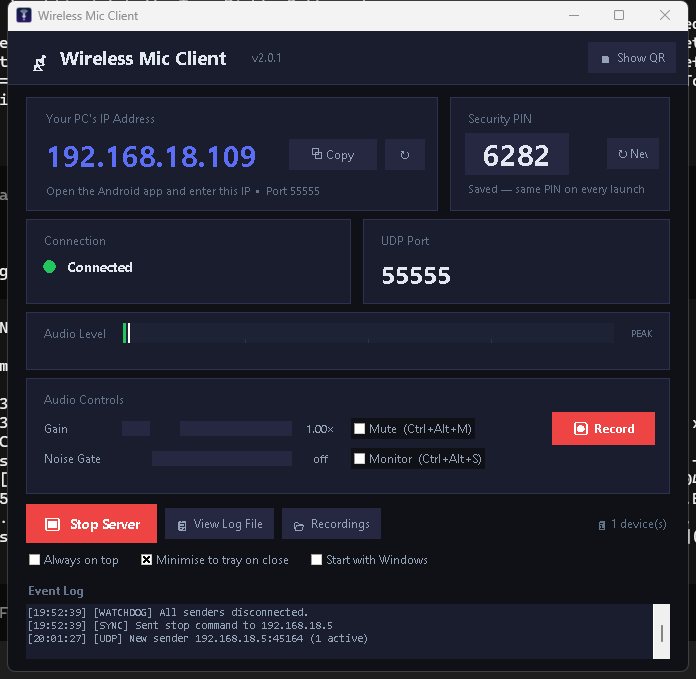
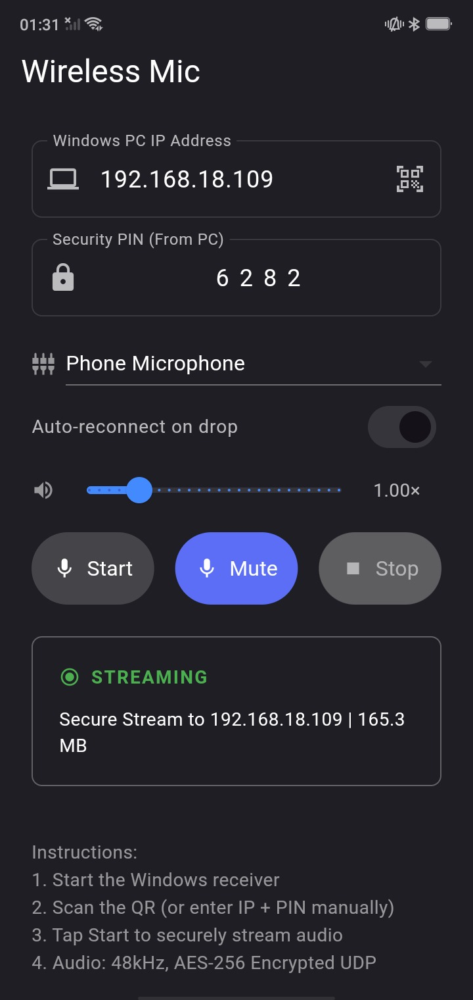

Step 1: Install the Windows Client
- Download the Windows installer (
WirelessMic_Setup-v2.0.exe) from the download page. - Run the installer. It will set up Python dependencies and VB-Audio Virtual Cable automatically.
- If prompted by Windows Defender SmartScreen, click "More info" → "Run anyway". The app is open-source and safe — you can verify the source code on GitHub.
- Launch the Wireless Mic Client. It will display your PC's local IP address, your persistent 4-digit PIN, and a QR code (click "Show QR").

Step 2: Install the Android App
- Download the Android APK (
WirelessMic-Android-v2.0.apk) from the download page. - Open the APK file on your Android device. You may need to enable "Install from unknown sources" in your settings.
- Grant microphone permission when prompted — this is required for audio capture.
- Open the app. Tap the QR icon to scan the code from the Windows client - IP and PIN fill in automatically (or type them manually).

Step 3: Connect & Stream
- Make sure both your Android phone and Windows PC are on the same Wi-Fi network.
- On the Android app, enter the IP address shown on the Windows client.
- Enter the 4-digit PIN displayed on the Windows client. This establishes the AES-256 encrypted connection.
- Tap "Start" on the Android app. Audio will begin streaming immediately.
- On your PC, the Wireless Mic Server will show real-time status — packets received, audio levels, and connection quality.
Configuring VB-Audio Virtual Cable
VB-Audio Virtual Cable creates a virtual audio device that routes the streamed audio to any application on your PC. This is what allows Wireless Mic to work with Zoom, Discord, OBS, and other apps.
Setting as Default Microphone
- Open Windows Sound Settings (right-click the speaker icon in your taskbar → "Sound settings").
- Under Input, select "CABLE Output (VB-Audio Virtual Cable)" as your default microphone.
- Now any application that uses the default microphone will receive audio from your Android phone.
Per-App Configuration
If you don't want to change your system default, you can select VB-Audio Cable as the microphone input inside individual applications:
- Zoom: Settings → Audio → Microphone → "CABLE Output"
- Discord: Settings → Voice & Video → Input Device → "CABLE Output"
- OBS Studio: Sources → Audio Input Capture → "CABLE Output"
- Google Meet: Settings → Audio → Microphone → "CABLE Output"
- Audacity: Toolbar → Microphone dropdown → "CABLE Output"
Using USB Tethering (Alternative to Wi-Fi)
If you experience Wi-Fi instability or want the lowest possible latency, you can use USB tethering:
- Connect your Android phone to your PC with a USB cable.
- On your Android device, go to Settings → Network → Hotspot & Tethering → USB Tethering and enable it.
- Your PC will get a new network interface. Use the IP address assigned to that interface in the Android app.
- Enter the PIN and start streaming as usual.
USB tethering provides a direct, dedicated connection with minimal latency and no Wi-Fi interference.
Windows Client Features
- Global hotkeys:
Ctrl+Alt+Mmute/unmute ·Ctrl+Alt+Rstart/stop recording ·Ctrl+Alt+Smonitor on/off. - Recording: One-click WAV recording — files are saved to
Music\WirelessMicwith auto-timestamped names. - System tray: Closing the window minimises to the tray so streaming keeps running in the background, with desktop notifications.
- Auto-start: Optionally launch with Windows (per-user setting).
- Multi-phone mixing: Several phones can stream to the same PC simultaneously — the audio is mixed into the cable.
- Live stats: Packets received, loss %, jitter (ms), MB streamed, uptime, and connected devices.
Troubleshooting
Connection Issues
- "Cannot connect" — Verify both devices are on the same Wi-Fi network. Check your firewall isn't blocking UDP port 55555. The Windows network profile must be set to Private — Public networks block inbound UDP.
- "Invalid PIN" — Re-check the PIN on the Windows client. The PIN is persistent - it only changes if you press "New" in the client.
- Phone shows "Sending" but PC says "Waiting" — The phone is likely streaming to an old saved IP address. Re-scan the QR code or retype the current IP shown on the client (UDP gives no delivery feedback, so the phone's counter climbs even when packets go nowhere).
- Client can't start / second instance gets nothing — Only one receiver can bind UDP port 55555. Close any other running instance of the Wireless Mic client.
- No audio coming through — Ensure VB-Audio Virtual Cable is installed and apps are selecting CABLE Output as the microphone (not CABLE Input). Check the VB-Cable configuration section.
Audio Quality Issues
- Choppy audio — Your Wi-Fi signal may be weak or congested. Move closer to your router, prefer a 5 GHz network, or switch to USB tethering.
- High latency — Close bandwidth-heavy applications. Wireless Mic streams uncompressed PCM (~768 kbps), but network congestion can introduce delays. Check loss/jitter in the client's stats bar.
- Echo or feedback — Ensure your PC speakers are muted or that you're using headphones to prevent the microphone from picking up its own output.
- Stream stops when the phone screen locks — Disable battery optimization for Wireless Mic (Settings → Apps → Wireless Mic → Battery → Allow background activity).
Still having issues? Visit our community page to ask for help or report a bug on GitHub.